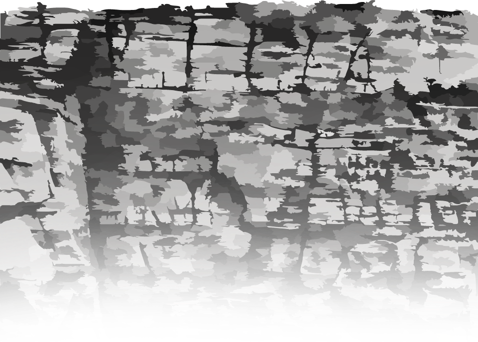
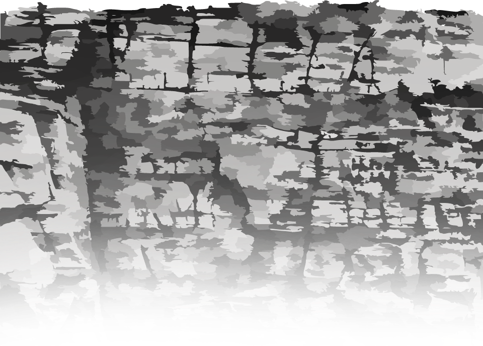

Lautan Dangkal
Lautan dangkal Indonesia adalah salah satu aset alam yang sangat berharga dan memiliki
potensi besar. Terletak di antara dua samudra besar, yaitu Samudra Pasifik dan Samudra
Hindia, wilayah perairan dangkal Indonesia menawarkan beragam peluang ekonomi, sumber daya
alam, dan ekosistem yang kaya.
Kalian bisa cari tahu, apa saja sih potensi - potensi yang ada di lautan Indonesia di bawah
sini
Tantangan
Seperti yang kita tahu, laut Indonesia adalah salah satu aset alam yang luar biasa dan memiliki
potensi yang sangat besar untuk memberikan manfaat ekonomi dan lingkungan. Namun, dibalik
potensi besar yang ada di lautan Indonesia ada beberapa tantangan yang perlu diatasi agar
potensi ini dapat dioptimalkan sepenuhnya.
Kurangnya promosi dan pemasaran yang efektif. Banyak
destinasi wisata bahari masih kurang
dikenal, bahkan di kalangan penduduk lokal. Promosi yang efektif sangat penting untuk membuat
destinasi lebih dikenal, menarik lebih banyak wisatawan.
Kurangnya sumber daya manusia yang terlatih dan berkualitas
tinggi. Hal ini sangat penting untuk
mengembangkan pariwisata bahari. seperti mengelola destinasi dan memberikan layanan kepada
wisatawan.
Infrastruktur yang mendukung pertumbuhan pariwisata, seperti
jalan, pelabuhan, hotel,
transportasi, dan fasilitas lainnya, masih kurang di banyak daerah. Keberadaan infrastruktur
yang memadai sangat penting untuk mengoptimalkan potensi pariwisata sebuah wilayah.
kerusakan lingkungan juga menjadi masalah yang cukup besar.
Deforestasi, polusi, dan kerusakan
terumbu karang adalah masalah yang sering terjadi. Dalam mengembangkan sektor pariwisata,
pengelolaan yang berkelanjutan dan pelestarian alam harus menjadi fokus utama.
TAMAT


 
